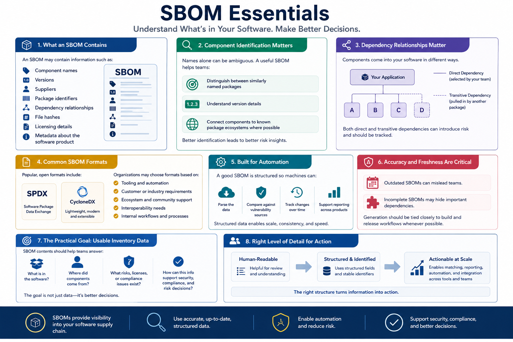

What Is SBOM?
SBOM Components and Contents
Connecting to LMS... Progress: in progress
Version 1.0 | Date: 2026-06-16 | Educational overview of Software Bill of Materials concepts.

Narration
An SBOM may contain information such as component names, versions, suppliers, package identifiers, dependency relationships, file hashes, licensing details, and metadata about the software product.
Component identification is important because names alone can be ambiguous. A useful SBOM should help teams distinguish between similarly named packages, understand version details, and connect components to known package ecosystems where possible.
Dependency relationships matter too. Some components are direct dependencies selected by the development team. Others are transitive dependencies pulled in by another package. Both can matter for risk analysis.
Common SBOM formats include SPDX and CycloneDX. Organizations may choose formats based on tooling, customer requirements, ecosystem support, interoperability, or internal workflows.
A good SBOM is structured enough for automation. Machines should be able to parse the data, compare components against vulnerability sources, track changes over time, and support reporting across products.
Accuracy and freshness are critical. An outdated SBOM can mislead teams, while an incomplete SBOM may hide important dependencies. Generation processes should be tied closely to build and release workflows when possible.
The practical goal is usable inventory data. SBOM contents should help teams understand what is in the software, where components came from, and how that information can support security, compliance, and risk decisions.
Teams should also think about the level of detail needed for action. A human-readable list may help during review, but structured fields and stable identifiers are what make large-scale matching, reporting, and automation practical.